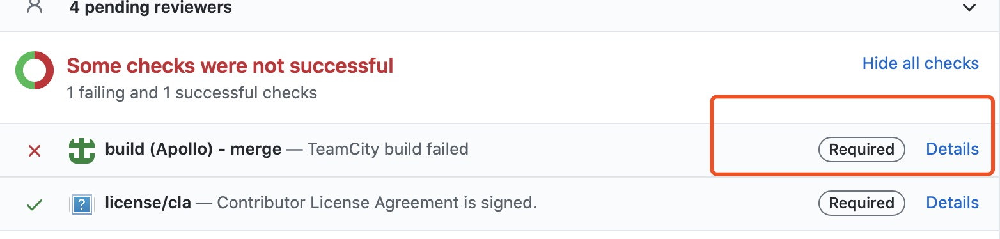

How to Use CI Result in Apollo¶
In Apollo, whether a PR can be merged depends on CI result and CLA.
What works will CI check?¶
Apollo CI will run the following steps:
Checkout your PR into Apollo codebase and build
Lint your code including .cc, .h, .py, BUILD, etc
Run all unit tests
So it’s recommended that the following commands should be run before commiting your code.
./apollo.sh lint
./apollo.sh build
./apollo.sh test
When your PR your PR got blocked by CI, you can click Details

Now you are in our CI system, enter Build Log to see detailed fail log.

Possible Errors And Solution¶
Error: “FAIL: //modules/perception/base:blob_cpplint”¶

This is due to lint error. Apollo adopted Google coding style, so the header files shoud be in the suggested order. If you can’t find the suggestion, please turn the log up and seek carefully.
Error: “FAIL: //modules/perception/base:blob_test”¶


This is due to a unit test failure. You can correct the unit test according to
the log. Especially when timeout happens, you can try changing the size filed
in BUILD from small to medium or large, hope it works.
If more complicated situation happens, please feel free to comment in your PR.